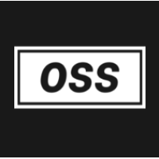

Home
Resume
About Me
Experience
Projects
Involvement
Work Experience

Rutgers Open Systems Solutions
Student Systems Programmer
February 2020 - Present
Creating and maintaining software and packages for Rutgers University.
Capital One
Incoming TIP Intern
June 2021 - Present
I am an incoming TIP intern at Capital One for Summer 2021!
Code Ninjas
Code Sensei
March 2019 - August 2019
Introduced and taught Scratch and JavaScript to children ages 7 to 14.
Made by Samuel Ping |
samuel.y.ping@gmail.com